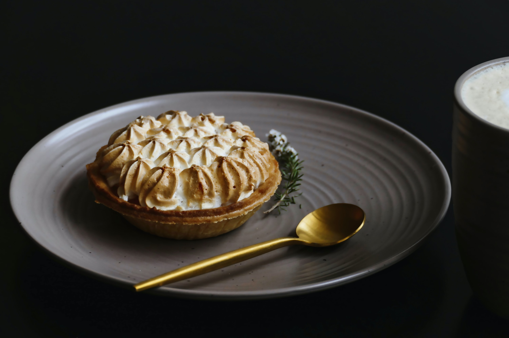

best home made cake delivered at your door
Add To Cart
| Our Cakes | ||
|---|---|---|
|  |  |
|
 |
 |
 |
Our Little Story
As well as our signature Party Cap Cakes hand baked by us in an ever changing selection of the latest and greatest flavours know to man and woman! we do lots of other tasty stuff too....
We can talk a long time about the things we love about Cake Stories, such as the beautiful coffee, the huge selection of loose leaf tea, the fact all our food, scones and cakes are made by us, our super friendly and brilliant team, the good hearty freshly prepared food or the many, many lights but the best thing we can do is to invite you for a visit... the door is open!
See us on TV